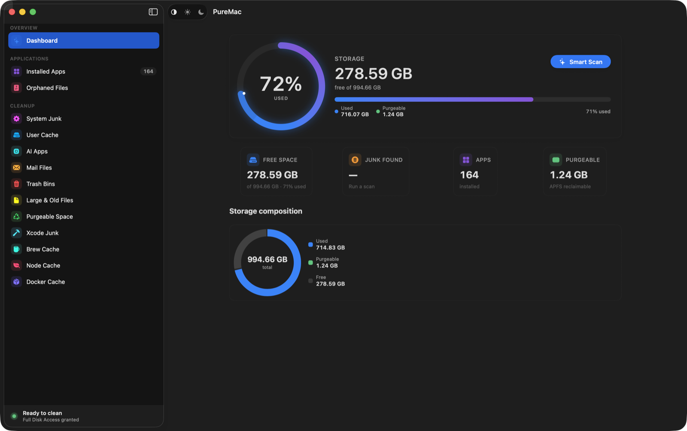
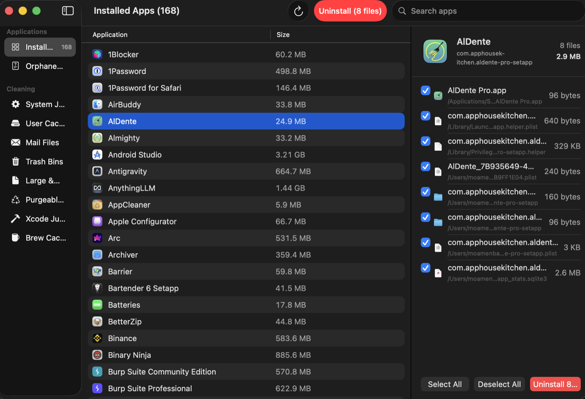

AppSift — Cleaner & Uninstaller
A free, open-source Mac cleaner and app uninstaller.
or brew install --cask appsift

Apple solders down 256 GB drives and charges a fortune for the next tier, so every gigabyte you already paid for matters. Most Mac cleaners answer that with subscriptions, telemetry, and dramatized "47 GB of junk detected!" badges. AppSift is the opposite: a free, open-source, native macOS app that removes apps cleanly, clears genuine junk, and tells you the truth about what it can and can't free.
Select an app and AppSift explains every preference, cache, container, launch agent, and log it matched before moving reviewed items to Trash.
Keep the app installed while reviewed user data moves to Trash. Executable packages, shared groups, launch items, and system components stay untouched.
Check App Store, Homebrew Cask, and public HTTPS Sparkle sources only when requested, with local signature and receipt evidence.
Inspect login items, background tasks, LaunchAgents, and daemons. Current-user legacy agents can be changed with recorded undo.
Surfaces files left over by apps you deleted long ago, with an always-ignore list for the false positives you want to keep.
System junk, user caches, Xcode DerivedData, Homebrew, npm/yarn/pnpm, Docker, and AI-app logs — scanned in parallel.
Find the multi-gigabyte files aging in Downloads, Documents, and Desktop — with folders you can exclude from the scan.
Uninstall, reset, and orphan removal use the system Trash plus local restore receipts. The separately confirmed junk cleaner identifies permanent cleanup explicitly.
No telemetry, analytics, accounts, or AppSift servers. Optional update checks contact only the verified source you requested.

| AppSift | CleanMyMac | Pearcleaner | OnyX | |
|---|---|---|---|---|
| Price | Free | $40+/yr | Free | Free |
| Open source | Yes (MIT) | No | Source-available | No |
| App uninstaller + orphans | Yes | Yes | Yes | No |
| No telemetry | Yes | No | Yes | Yes |
| No subscription | Yes | No | Yes | Yes |
| Recoverable app uninstall/reset | Yes | Partial | Uninstall | No |
| Honest about purgeable space | Yes | No | n/a | n/a |
Comparison reflects publicly documented features as of 2026; corrections welcome via PR.
brew install --cask appsift
Or download the latest DMG from GitHub. Check the release notes for signing status and checksums. Requires macOS 13 (Ventura) or later. Universal — Apple Silicon and Intel.
AppSift is independently maintained by GravityPoet. It began as a fork of PureMac; the original copyright and MIT license notice are retained.
Yes — completely free and open source under the MIT license on GitHub, and installable with Homebrew. No subscription, no trial, no paywalled features.
AppSift does what people actually use CleanMyMac for — a real app uninstaller that catches every leftover, junk and cache cleanup, and orphaned-file detection — as a free, native, open-source app with no subscription and no fear-based scans.
App uninstall, App Reset, and orphan removal use the Trash and local restore receipts. You review every item with its real path, and shared, ambiguous, executable, and high-risk paths are protected before action.
No. AppSift has no telemetry, analytics, crash reporting, accounts, or servers. Core maintenance works offline; App Updates contacts only a verified Apple or vendor source after you request a check.